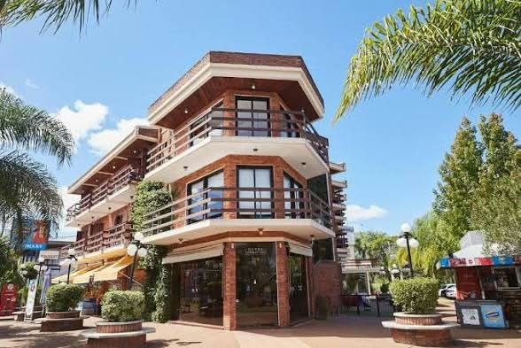
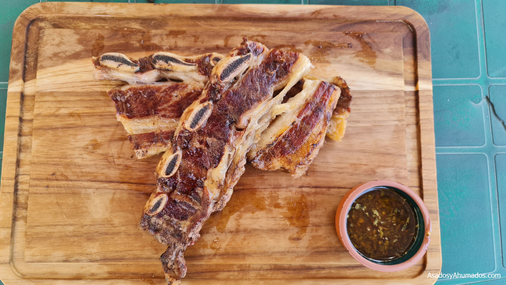
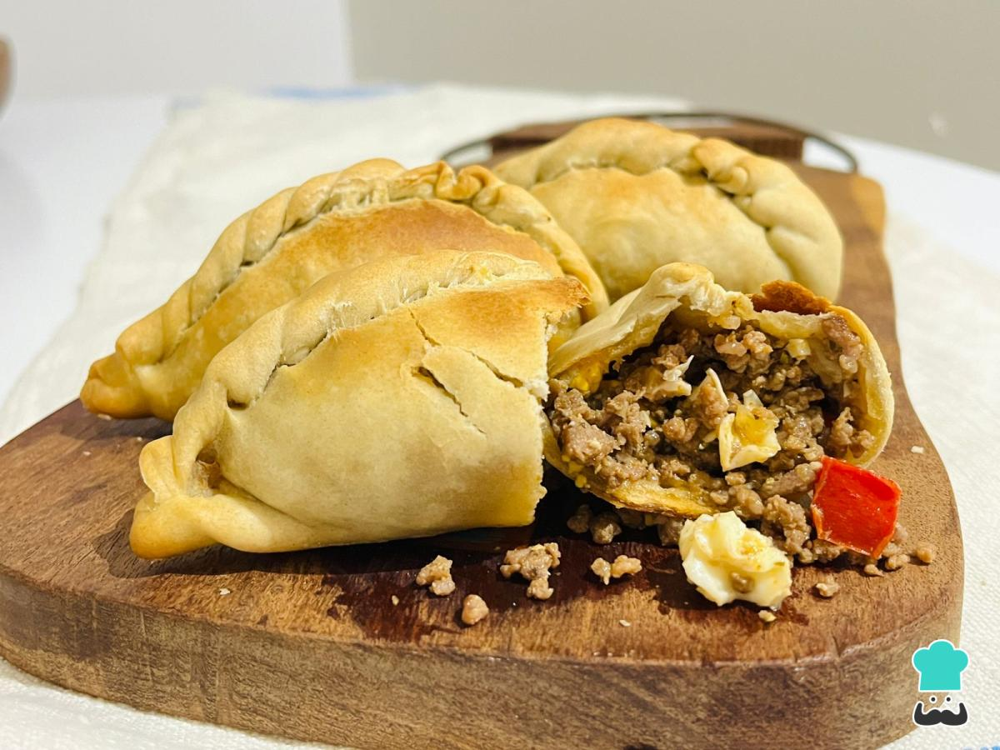
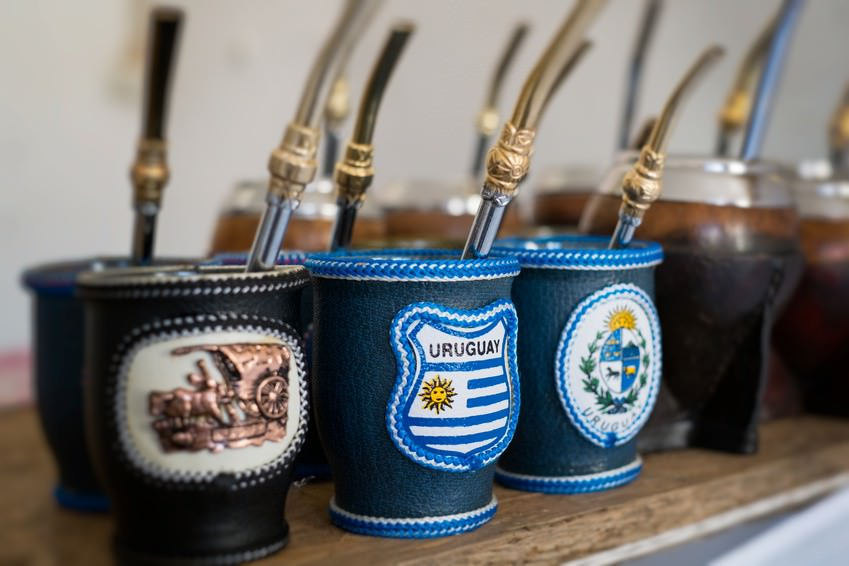

Nación Amada
Descubrí todo lo que pasa en Salto: festivales, ferias, actividades culturales y espectáculos para toda la familia.
Hoteles, restaurantes y los mejores lugares turísticos de Salto para que tu visita sea inolvidable.
Explorá plazas, parques, la Costanera y todos los rincones únicos que hacen especial a nuestra ciudad.

Dayman, Salto
Mesias Hotel, Salto

Jose Pedro, Salto

Parrilla, fuego lento y cortes clásicos de la mesa uruguaya.

Sabores caseros para comer al paso o compartir en familia.

Una tradición cotidiana que acompaña plazas, rambla y encuentros.